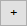
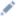

Отчет MS Word (печатная форма) — документ, который сгенерирован на основе записей разделов Creatio в формате *.docx. Например, отчеты раздела Договоры (Contracts) позволяют распечатать формуляры договоров, а отчеты раздела Активности (Activities) можно использовать для распечатки электронных писем, формирования протоколов встреч и т. д. Отчеты MS Word описаны в блоке статей Отчеты и печатные формы.
В зависимости от использования макросов, Creatio позволяет создать различные виды отчетов MS Word.
Виды отчетов MS Word, которые позволяет создать Creatio:
- Простой отчет.
- Отчет с использованием базовых макросов.
- Отчет с использованием пользовательских макросов.
Настроить доступ к разделу Настройка отчетов
Доступ к разделу Настройка отчетов (Report setup) настраивается на уровне системных операций. Если пользователь не имеет доступа к разделу Настройка отчетов (Report setup), то отображается стандартное сообщение с указанием операции и недостающих прав. По умолчанию доступ к основным системным операциям имеют только администраторы приложения. Creatio предоставляет возможность настройки доступа к системным операциям для пользователей или групп пользователей. Подробнее читайте в статье Настроить права доступа на системные операции.
Чтобы настроить доступ к разделу Настройка отчетов (Report setup):
- Перейдите в дизайнер системы по кнопке
 . В блоке Пользователи и администрирование (Users and administration) перейдите по ссылке Права доступа на операции (Operation permissions).
. В блоке Пользователи и администрирование (Users and administration) перейдите по ссылке Права доступа на операции (Operation permissions). - Выберите системную операцию Доступ к разделу "Настройка отчетов" (Access to "Report setup" section, код CanManageReports).
- На детали Доступ к операции (Operation permission) нажмите
 и укажите получателя прав.
и укажите получателя прав.
В результате запись отобразится на детали Доступ к операции (Operation permission) в колонке Уровень доступа (Access level) со значением Да (Yes). Пользователи, которые входят в указанную роль, получат доступ к системной операции Доступ к разделу "Настройка отчетов" (Access to "Report setup" section, код CanManageReports).
Создать простой отчет MS Word
-
Установите Creatio MS Word Report Designer (выполняется однократно). Для этого воспользуйтесь инструкцией, которая приведена в статье Установить плагин Creatio для Word.
Плагин MS Word (Creatio MS Word Report Designer) — программный модуль, который динамически подключается к Creatio. Назначение плагина MS Word — формирование шаблона отчета MS Word на основе данных Creatio в формате *.docx.
-
Создайте отчет MS Word.
- Перейдите в дизайнер системы по кнопке
 . В блоке Настройка системы (System setup) перейдите по ссылке Настройка отчетов (Report setup).
. В блоке Настройка системы (System setup) перейдите по ссылке Настройка отчетов (Report setup). -
Выполните действие Добавить отчет —>MS Word (New report —>MS Word).

-
На панели свойств заполните свойства отчета:
- Название отчета (Report name) — пользовательское название отчета (обязательное свойство). Отображается на соответствующей панели инструментов, которая зависит от установленных признаков Отображать в разделе (Show in the section list view) и Отображать на странице записи (Show in the section record page).
- Раздел (Section) — выберите раздел, из которого планируется генерировать отчет (обязательное свойство). Например, чтобы отобразить отчет в разделе Контрагенты (Accounts), в выпадающем списке выберите соответствующий раздел.
- Тип (Type) — тип отчета (обязательное свойство). Заполняется автоматически и недоступно для редактирования.
- Признак Отображать в разделе (Show in the section list view) — указывает необходимость отображения отчета в выпадающем меню кнопки Печать (Print) панели инструментов раздела.
- Признак Отображать на странице записи (Show in the section record page) — указывает необходимость отображения отчета в выпадающем меню кнопки Печать (Print) панели инструментов страницы записи.
- Перейдите в дизайнер системы по кнопке
-
Настройте поля отчета.
- В блоке Настройте поля отчета (Set up report data) рабочей области страницы настройки отчета нажмите .
-
В выпадающем списке Колонка (Column) выберите колонку, которую планируется добавить в отчет. Например, чтобы в отчет добавить колонку Название (Name), в выпадающем списке выберите соответствующую колонку.
- Нажмите Выбрать (Select).
- На панели инструментов страницы настройки отчета нажмите Применить (Apply).
-
Настройте шаблон отчета.
- Запустите приложение MS Word.
-
На вкладке плагина Creatio панели инструментов нажмите кнопку Connect.
-
Введите логин и пароль пользователя в Creatio.

-
Подключите сервер приложения Creatio.
- Возле поля Server нажмите .
-
В окне Available Servers нажмите New.

-
Заполните свойства сервера:
- Name — пользовательское имя сервера.
- Link — адрес сервера приложения Creatio, в котором выполнялась настройка отчета.

- В окне Server Connection Setup нажмите OK для сохранения параметров подключения сервера Creatio.
- В окне Available Servers выберите сервер приложения Creatio, в котором выполнялась настройка отчета (опционально), и нажмите OK.
- В окне Login нажмите OK для подключения к выбранному серверу Creatio.
-
Выберите отчет MS Word, который планируется настроить.
-
На вкладке плагина Creatio панели инструментов нажмите кнопку Select report.
- В окне Creatio Word reports выберите отчет, шаблон которого планируется настроить.
- В окне Creatio Word reports нажмите OK для выбора отчета.
В результате открывается панель Word report data выбранного отчета.
-
- Настройте шаблон отчета. Для этого воспользуйтесь инструкцией, которая приведена в статье Настроить отчет в плагине Word и загрузить в Creatio.
-
Загрузите настроенный шаблон отчета в Creatio. Для этого на вкладке плагина Creatio панели инструментов нажмите кнопку Save to Creatio.
В результате настроенный шаблон отчета загружен в Creatio и отображается на панели свойств.
Создать отчет MS Word с использованием базовых макросов
- Выполните шаги 1-3 алгоритма создания простого отчета MS Word.
-
К колонке отчета добавьте тег макроса.
-
Откройте страницу настройки колонки, к которой планируется добавить тег макроса.
Способы открытия страницы настройки колонки:
- В блоке Настройте поля отчета (Set up report data) рабочей области страницы настройки отчета дважды кликните по колонке, к которой необходимо добавить тег макроса.
- В блоке Настройте поля отчета (Set up report data) рабочей области страницы настройки отчета в строке колонки, к которой необходимо добавить тег макроса, нажмите .
-
Измените значение поля Заголовок (Title) на "НазваниеКолонки[#ИмяМакроса#]". [#ИмяМакроса#] — тег макроса, который выполняет необходимое действие. Для корректной работы макроса название колонки объекта (поле Колонка (Column)) должно совпадать с названием колонки с макросом (поле Заголовок (Title)). Например, для колонки Name поле Заголовок (Title) должно содержать значение Name[#ИмяМакроса#] (например, Name[#Upper#], где [#Upper#] — тег макроса, который конвертирует значение строки в верхний регистр).
- На панели инструментов страницы настройки колонки нажмите Сохранить (Save).
-
- Выполните шаг 4 алгоритма создания простого отчета MS Word.
Создать отчет MS Word с использованием пользовательских макросов
- Выполните шаг 1 алгоритма создания простого отчета MS Word.
-
Реализуйте пользовательские макросы.
- Создайте схему типа Исходный код (Source code). Для этого воспользуйтесь инструкцией, которая приведена в статье Исходный код.
-
В дизайнере исходного кода реализуйте класс макроса.
- В классе макроса реализуйте интерфейс IExpressionConverter. Базовый интерфейс IExpressionConverter реализован в схеме ExpressionConverterHelper пакета NUI.
-
Для макроса добавьте атрибут ExpressionConverterAttribute с указанием имени макроса. Этот атрибут позволяет вызвать пользовательский макрос из шаблона отчета.
Пример атрибута приведен ниже.
- Реализуйте метод интерфейса Evaluate(object value, string arguments = ""). В качестве параметра принимает значение поля из шаблона отчета MS Word. Возвращает значение типа string, которое подставляется на место этого поля в сформированном отчете.
- Выполните шаги 2-4 алгоритма создания простого отчета MS Word. На шаге 2 в список полей отчета добавьте колонку Id, которая является входящим параметром для пользовательского макроса.
Привязать отчет MS Word к пакету
- Перейдите в раздел Конфигурация (Configuration) и выберите пользовательский пакет, в который будет добавлена схема.
-
На панели инструментов реестра раздела нажмите Добавить —> Данные (Add —> Data).

-
Выполните привязку данных. Для этого воспользуйтесь инструкцией, которая приведена в статье Привязать данные к пакету.
Элементы, привязку которых необходимо выполнить:
- SysModuleReport_ReportName — отчет. Подключается по идентификатору отчета (колонка [Id] таблицы [SysModuleReport] базы данных).
- SysModuleReportTable_ReportName — табличная часть отчета. Подключается по идентификатору отчета (колонка [Id] таблицы [SysModuleReportTable] базы данных).